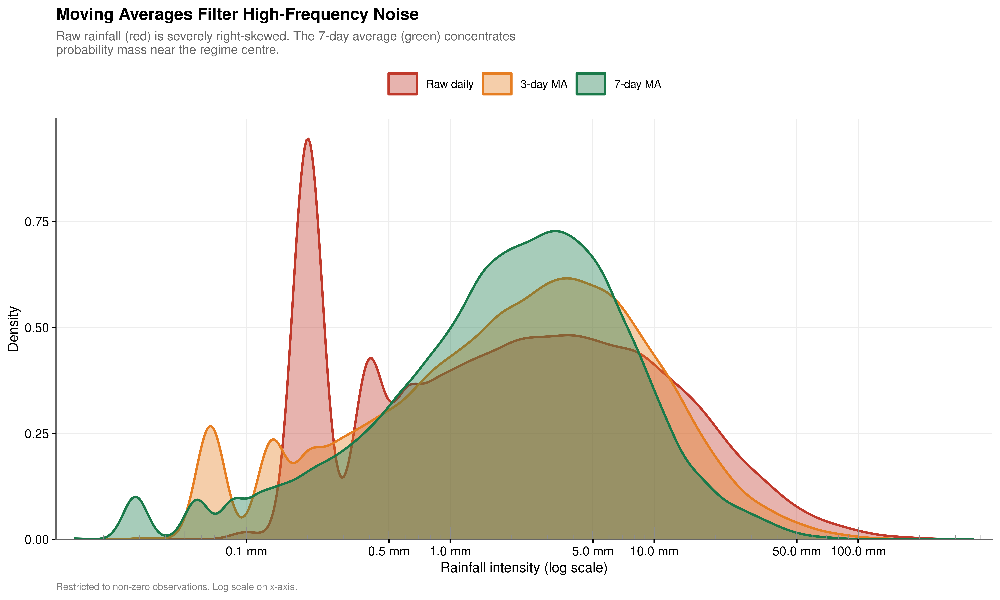
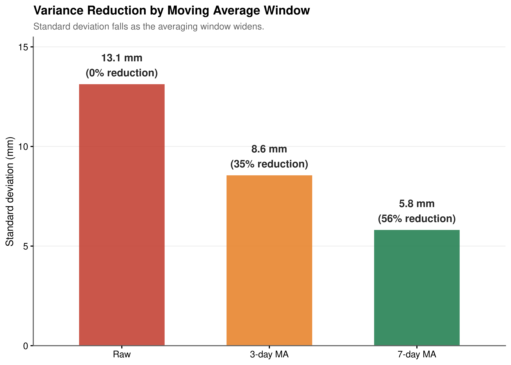
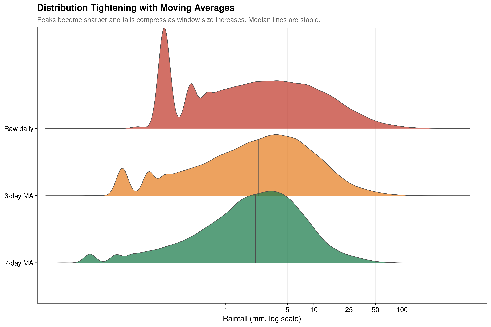
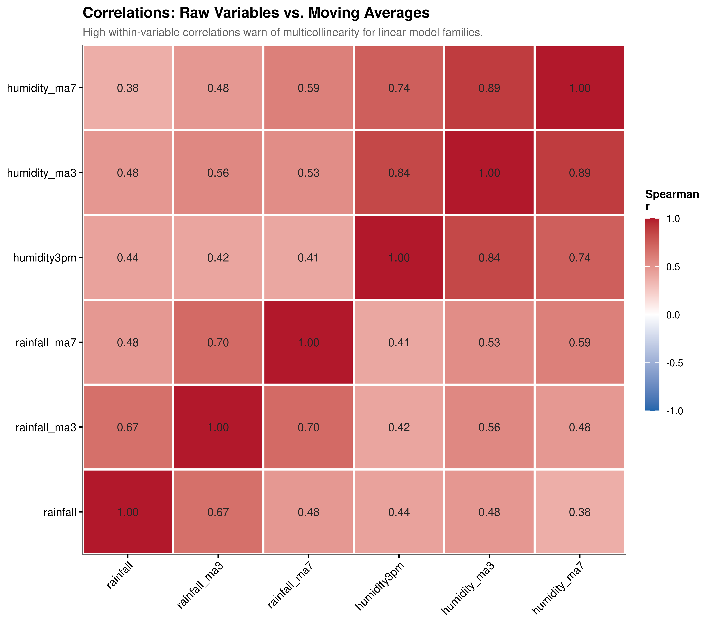

4 Feature Engineering
4.1 From Raw Meteorological Signals to Predictive Inputs
Chapter Context. This chapter documents the feature engineering pipeline that bridges the exploratory analysis and the final model. Each design decision traces directly to an empirical finding from the EDA: the features constructed here are not ad hoc transformations but targeted responses to identified distributional and structural properties of the data.
4.2 Signal Extraction via Moving Averages
Daily meteorological observations are inherently noisy. A single day’s rainfall measurement reflects both the underlying weather regime and a high-frequency stochastic component, the difference between a storm cell passing directly over a station versus five kilometres to its east. Before engineering predictive features from this signal, we must first assess whether smoothing can reduce this noise and, if so, at what cost.
Rolling means over 3-day and 7-day trailing windows are computed for both rainfall and afternoon humidity. Right-alignment is enforced throughout, meaning the average at time \(t\) is computed from observations at \(t\), \(t-1\), …, \(t-(k-1)\). This is a necessary precaution against data leakage: any lookahead alignment would contaminate the training signal with future observations.
4.2.1 Noise Reduction



The density plots in Figure 4.1 make the smoothing effect immediately apparent. The raw daily distribution is severely right-skewed with a long tail reaching into the hundreds of millimetres, a consequence of the extreme kurtosis documented in Chapter 3. The 3-day moving average begins to suppress this variance, and the 7-day average produces a substantially more concentrated distribution whose peak is considerably higher and whose tails are dramatically shorter.
Quantitatively (Figure 4.2), the standard deviation of rainfall intensity falls from 13.1 mm in the raw series to 5.8 mm under the 7-day average, a reduction of 56%. The ridgeline plot (Figure 4.3) confirms that this compression is not an artefact of the summary statistic: the entire shape of the distribution tightens, with the median remaining stable across windows while the spread narrows. The 7-day average can therefore be interpreted as a measure of the prevailing weekly wetness regime, a smoothed characterisation of whether the preceding week has been generally wet or dry rather than a reflection of any single day’s unpredictability.
4.2.2 Multicollinearity Trade-off

The noise-reduction benefit of moving averages comes at a cost. As shown in Figure 4.4, the 3-day and 7-day humidity moving averages share a Spearman correlation of 0.89, and the equivalent rainfall moving averages are similarly collinear with each other and with the raw series. Including multiple moving average windows alongside their source variables in the same linear model would produce a near-singular design matrix, inflating coefficient standard errors and making the model numerically unstable.
This presents a choice between responsiveness and stability. The 3-day average reacts more quickly to changing conditions but retains more of the day-to-day variability. The 7-day average is more stable but slower to reflect recent changes in the weather regime. For linear model families such as logistic regression, only one window can be safely retained per variable; including both is not viable. For tree-based models such as Random Forest and Gradient Boosting, this constraint does not apply, since these methods select among correlated features at each split rather than inverting the full covariance matrix. The moving average selection strategy therefore depends on the model family, a consideration that informs the variable selection carried out in the subsequent modelling chapter.
4.3 Feature Engineering Pipeline
The following pipeline implements the complete set of features motivated by the EDA. Each transformation is annotated to its originating empirical finding.
The pipeline is organised into four conceptually distinct transformations, each addressing a specific structural property identified in the EDA.
4.3.1 Cyclical Encoding of Seasonality
The seasonal analysis established that rainfall frequency and intensity follow a smooth annual cycle: summer events are rarer but more intense, winter events are more frequent but lighter, and the transition months connect these poles continuously. Treating month as a standard integer (1 through 12) would incorrectly imply that January and December are maximally distant on the number line, when in reality they are climatologically adjacent. Treating it as an unordered factor imposes no such adjacency constraint but discards ordinal information entirely.
The appropriate solution is to represent the annual cycle as a point on the unit circle, decomposed into its sine and cosine components:
\[\text{day\_sin} = \sin\!\left(\frac{2\pi \cdot \text{day\_of\_year}}{365}\right), \quad \text{day\_cos} = \cos\!\left(\frac{2\pi \cdot \text{day\_of\_year}}{365}\right)\]
Together, these two features encode any day of the year as a unique coordinate on the unit circle. The distance between any two days in this space reflects their true circular proximity: the December-to-January transition corresponds to a small arc, not a large jump. The model can learn smooth seasonal effects directly from the geometry of this representation.
4.3.2 Temporal Persistence Features
The Markov Chain analysis (Section 3.5.2) demonstrated that the previous day’s rain state carries a moderate but meaningful signal (\(V \approx 0.31\)), and the dry spell analysis showed that the probability of rain decays in a non-linear pattern as dry spells lengthen. Three features capture these dynamics.
rain_yesterday is a direct binary indicator of the previous day’s state, encoding the first-order Markov transition as a predictor. days_since_rain counts the number of consecutive dry days preceding the current observation, capturing the progressive stabilisation of dry conditions that the logistic regression and spline analysis identified. rainfall_ma7 and humidity_ma7 provide a smoothed weekly context for both the rainfall and moisture signals, lagged by one additional day beyond the rolling window to ensure that no same-day information is included when predicting today’s outcome.
The lagging step deserves emphasis. Without it, the 7-day moving average at time \(t\) includes the observation at time \(t\) itself, meaning a model trained on this feature would have access to the value it is trying to predict. This form of data leakage produces artificially optimistic training metrics that do not generalise to deployment, where future observations are unavailable by definition.
4.3.3 Physical Interaction and Derived Indices
The bivariate density analysis (Section 3.8) identified a qualitative difference in the joint distribution of humidity and sunshine between rainy and dry days: rain occurs almost exclusively when afternoon humidity is high and sunshine hours are low simultaneously, the “Rain Corner” phenomenon. An additive model cannot represent this conditional structure; a multiplicative interaction term is required.
Prior to computing the interaction, both sunshine and humidity3pm are mean-centred by subtracting their grand means. This is not merely a cosmetic step. When an interaction term is formed from un-centred variables, the resulting product is algebraically correlated with both main effects, inflating the VIF of all three terms and making their individual coefficients difficult to interpret. Centring removes this artificial correlation: the main effects then represent the effect of each variable at the average level of the other, and the interaction term represents the additional effect of their joint deviation from those averages. This is confirmed empirically in the VIF diagnostics in Section 3.
Beyond the interaction term, five derived meteorological indices are constructed from physically motivated combinations of the available variables. The dewpoint temperatures at 9:00 AM and 3:00 PM, computed from the Magnus approximation \(T_d \approx T - \frac{100 - RH}{5}\), represent the temperature at which the air would become saturated if cooled at constant pressure. The change in dewpoint across the day (dewpoint_change) measures whether the atmosphere is gaining or losing moisture over the course of the day, a signal not directly recoverable from temperature or humidity alone. The moisture_index encodes the combined effect of high humidity and limited solar exposure. The instability_index combines pressure deficit from the standard 1020 hPa baseline with humidity, approximating the atmospheric conditions that favour convective development. cloud_development captures upward cloud formation during the day, which the pressure analysis identified as a meaningful precursor to precipitation.
4.3.4 Circular Wind Vector Decomposition
Wind direction is a circular variable: 360 degrees and 0 degrees represent the same direction (due North), yet a naive numeric encoding would treat them as maximally distant. This misrepresentation is particularly consequential for wind because the directional origin of an air mass carries meaningful physical content: moisture-laden northerly flows behave very differently from dry southerly flows in the Australian context.
The standard solution is to decompose each directional reading into orthogonal Cartesian components by projecting the wind vector onto the north-south and east-west axes:
\[U_{EW} = v \cdot \sin(\theta), \quad V_{NS} = v \cdot \cos(\theta)\]
where \(v\) is wind speed (in km/h) and \(\theta\) is the compass bearing in radians. The resulting U and V components are continuous and interpretable: a purely northerly wind of 20 km/h produces \(V_{NS} = 20\), \(U_{EW} = 0\); a purely easterly wind of the same speed produces \(V_{NS} = 0\), \(U_{EW} = 20\). This transformation is applied to both the peak gust and the 9:00 AM wind observations, yielding four wind component features in total.
4.4 Multicollinearity Diagnostics
Show the code
| Term | VIF | VIF_CI_low | VIF_CI_high | SE_factor | Tolerance | Tolerance_CI_low | Tolerance_CI_high |
|---|---|---|---|---|---|---|---|
| humidity3pm | 4.776 | 4.732 | 4.821 | 2.185 | 0.209 | 0.207 | 0.211 |
| humidity9am | 2.486 | 2.466 | 2.507 | 1.577 | 0.402 | 0.399 | 0.406 |
| humidity_ma7 | 2.318 | 2.300 | 2.337 | 1.523 | 0.431 | 0.428 | 0.435 |
| instability_index | 2.039 | 2.023 | 2.055 | 1.428 | 0.490 | 0.487 | 0.494 |
| dewpoint_9am | 2.036 | 2.020 | 2.052 | 1.427 | 0.491 | 0.487 | 0.495 |
| sunshine | 1.993 | 1.978 | 2.009 | 1.412 | 0.502 | 0.498 | 0.506 |
| day_cos | 1.864 | 1.850 | 1.878 | 1.365 | 0.536 | 0.532 | 0.541 |
| evaporation | 1.808 | 1.795 | 1.822 | 1.345 | 0.553 | 0.549 | 0.557 |
| dewpoint_change | 1.560 | 1.549 | 1.571 | 1.249 | 0.641 | 0.636 | 0.645 |
| rainfall_ma7 | 1.325 | 1.316 | 1.333 | 1.151 | 0.755 | 0.750 | 0.760 |
| gust_U_EW | 1.315 | 1.306 | 1.323 | 1.147 | 0.761 | 0.756 | 0.765 |
| wind9am_U_EW | 1.296 | 1.288 | 1.304 | 1.138 | 0.772 | 0.767 | 0.776 |
| rain_yesterday | 1.185 | 1.178 | 1.192 | 1.088 | 0.844 | 0.839 | 0.849 |
| pressure_change | 1.176 | 1.169 | 1.183 | 1.084 | 0.850 | 0.845 | 0.855 |
| sun_humid_interaction | 1.174 | 1.167 | 1.181 | 1.084 | 0.852 | 0.846 | 0.857 |
| day_sin | 1.143 | 1.136 | 1.149 | 1.069 | 0.875 | 0.870 | 0.880 |
| gust_V_NS | 1.135 | 1.128 | 1.142 | 1.065 | 0.881 | 0.876 | 0.886 |
| wind9am_V_NS | 1.131 | 1.125 | 1.138 | 1.064 | 0.884 | 0.879 | 0.889 |
| cloud_development | 1.031 | 1.026 | 1.037 | 1.015 | 0.970 | 0.964 | 0.975 |
| days_since_rain | 1.004 | 1.001 | 1.015 | 1.002 | 0.996 | 0.985 | 0.999 |
Feature engineering that introduces interaction terms, composite indices, and temporal aggregates necessarily creates new correlational structure in the design matrix. After constructing the full feature set, it is essential to verify that no predictor has become so collinear with the others that its coefficient in a linear model would be effectively unidentifiable. We use the Variance Inflation Factor (VIF) for this diagnosis. The VIF for a given predictor quantifies how much its coefficient variance is inflated relative to what it would be in an orthogonal design: a VIF of \(k\) indicates that the standard error of that coefficient is \(\sqrt{k}\) times larger than it would be if the predictor were uncorrelated with all others. Values above 10 are conventionally treated as indicating severe collinearity requiring remediation.
Cyclical and wind components. The day_sin, day_cos, gust_V_NS, and gust_U_EW features all show VIF values well below 3. This confirms that the decomposition strategies, sine/cosine for the annual cycle and U/V projection for wind direction, successfully converted circular variables into continuous representations without introducing redundancy. Each component carries information that is approximately orthogonal to its pair.
Interaction stability. The sun_humid_interaction term has a VIF of 1.182, which is exceptionally low for a multiplicative interaction. Without mean-centring the constituent variables before multiplication, interaction terms routinely exhibit VIFs above 10 due to their algebraic overlap with the main effects. The observed value of 1.182 provides empirical confirmation that centring eliminated this artificial correlation, and that the interaction term is capturing a genuinely distinct dimension of the feature space, the joint Rain Corner structure identified in Section 3.8.
Elevated collinearity in humidity. The highest observed VIF is for humidity3pm at approximately 4.841. This is expected: humidity participates structurally in three of the derived features (moisture_index, instability_index, and sun_humid_interaction), and its 7-day moving average is also present in the feature set. A VIF of 5 lies below the conventional threshold of 10 for severe concern and is consistent with what the literature describes as moderate collinearity. The decision to retain humidity3pm despite this inflation is deliberate: it is the single strongest individual predictor of rainfall in the dataset (Spearman \(r = 0.44\), as established in Chapter 3), and removing it in favour of its derived aggregates would sacrifice the direct same-day atmospheric moisture signal for the sake of a marginal improvement in collinearity. For tree-based models, this trade-off does not arise, since these methods are not sensitive to multicollinearity by design.
Overall assessment. The full engineered feature set is numerically stable for use in linear model families. No VIF exceeds the critical threshold of 10, and the majority of features show values below 3. The pipeline has successfully converted the raw meteorological signals into a representation that is both physically interpretable and statistically well-conditioned for the modelling stage.